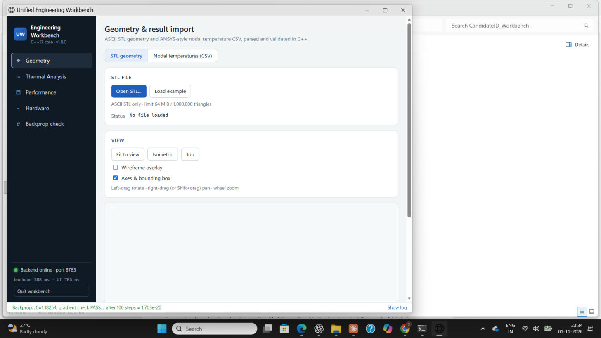
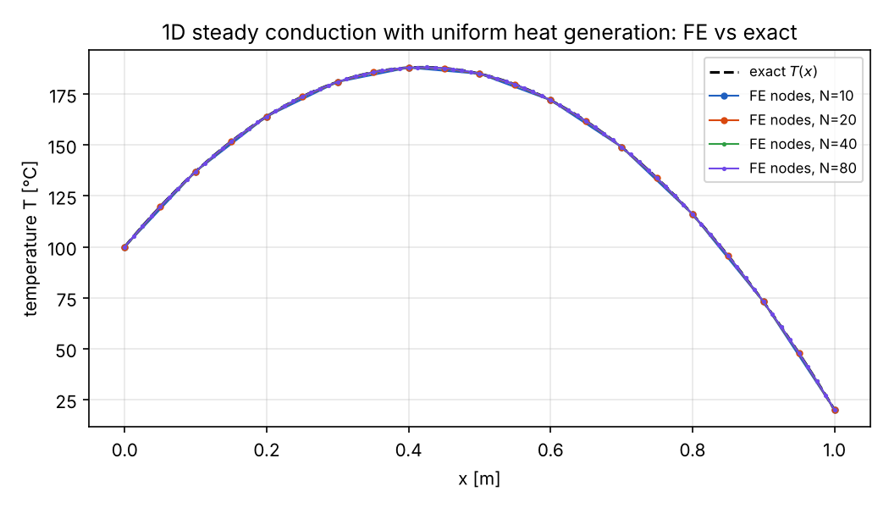
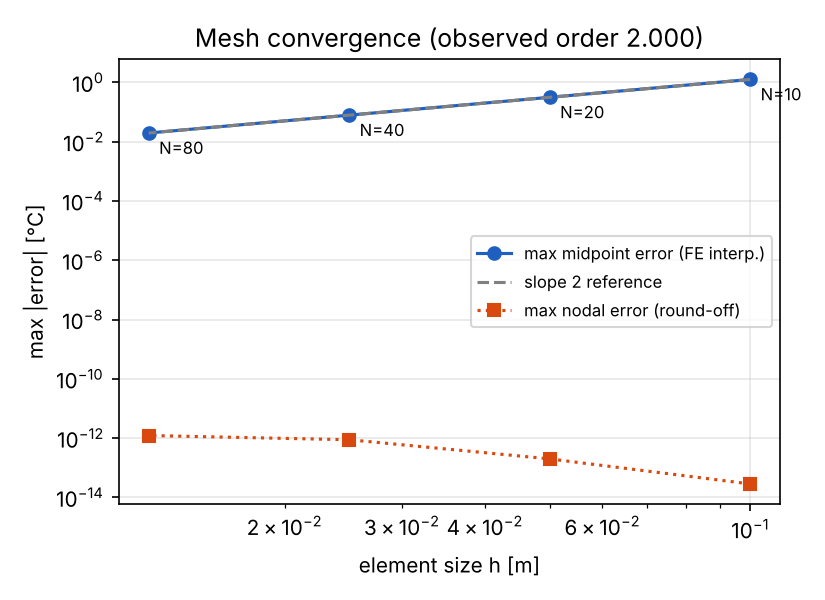
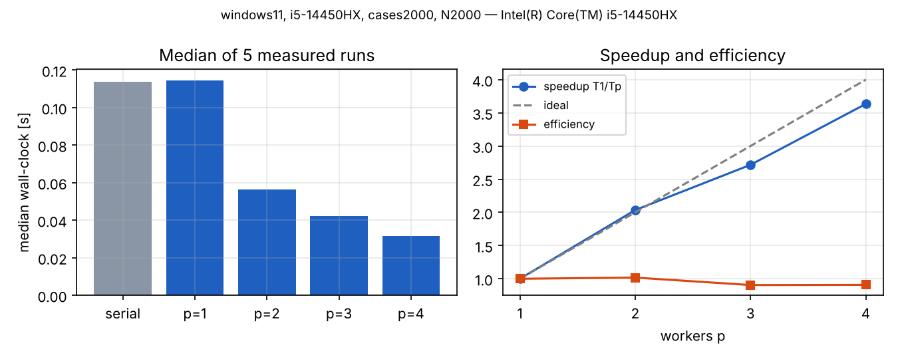
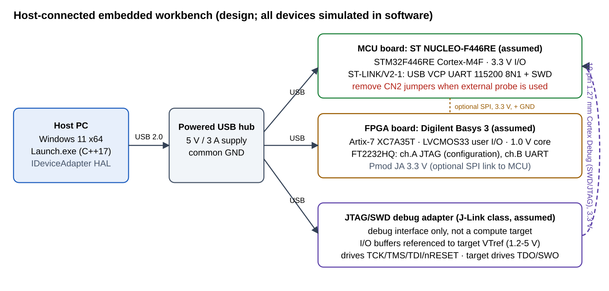
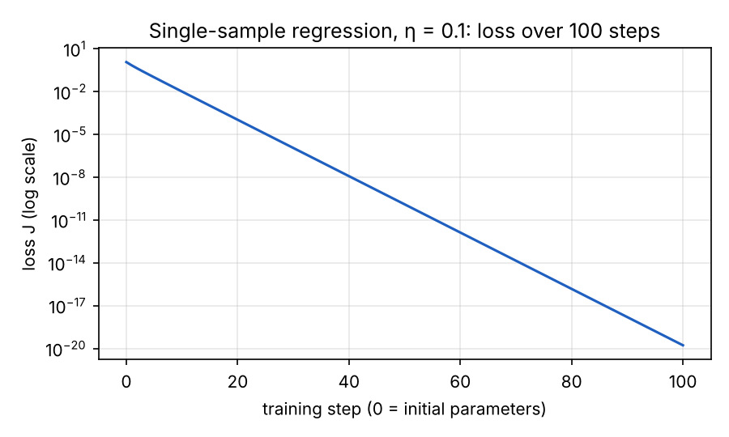

The workbench imports ASCII STL geometry and nodal temperature CSV data, solves a 1D steady thermal FEA problem and its mesh convergence, runs a batch of independent solves on a bounded thread pool, models a host-connected MCU/FPGA/JTAG bench with simulated adapters, and checks a hand-derived backpropagation. All parsing, numerics, concurrency, device logic and file processing are C++17; the browser-based UI only renders.
| Gate / headline | Evidence |
|---|---|
| Standalone launch | Extracted ZIP on the target laptop (Windows 11 build 26300, i5-14450HX), Launch.exe double-clicked in Explorer: UI opened, backend ready 388 ms, UI ready 705 ms after process creation. Only Windows system DLLs are imported. |
| C++ backend and tests | 62 test cases / 1276 assertions pass on Linux GCC 13, on the Windows binary under Wine, and natively on the target laptop. |
| Thermal FEA | Max midpoint error 1.25, 0.3125, 0.078125, 0.01953 °C for N = 10, 20, 40, 80; observed order 2.000; equals q h²/8k exactly. |
| Multicore | Speedup 2.04 / 2.72 / 3.63 at p = 2 / 3 / 4 on the target laptop; serial/parallel max |ΔT| = 0 °C (limit 1e-8). |
| Backprop | Analytic vs central-difference gradients differ by ≤ 1.1e-10 (limit 1e-5); loss 1.18 → 1.7e-20 in 100 steps. |
Layers. workbench_core is a static library with no UI, HTTP or JSON dependency (geometry, thermal, performance, hardware, ml, core). It is linked into three executables: Launch.exe (application), workbench_cli (headless generator of every CSV in results/) and workbench_tests. A thin transport layer (cpp-httplib bound to 127.0.0.1, nlohmann/json mapping, a job manager) exposes the core; the web UI (three.js, Chart.js) is compiled into the exe.
Why a web UI instead of Qt 6. The brief treats web and desktop equally. Qt 6 could not be cross-built and deployed for Windows reliably from the Linux build environment, and the launch gate is pass/fail. A static MinGW-w64 exe with an embedded UI shown in an Edge --app window (Edge ships with Windows 11) has no runtime to install, works offline and was verified on the target PC.
| Concern | Decision |
|---|---|
| Data paths | resolved from the exe location, not the working directory |
| Parsing numbers | std::from_chars: locale independent; NaN/Inf rejected |
| Long work | background job + progress + cooperative cancel; results published only when complete |
| Errors | typed exceptions mapped to 400 / 409 / 413 / 422 (with line) / 504 (recoverable) |
| Global FE matrix | tridiagonal storage, Thomas solve O(N); dense path kept for tests |
| Reproducibility | vendored deps with SHA-256, fixed seed, pinned RNG mapping, CLI regenerates all data |
| Security | loopback only, 64 MiB upload cap, no shell execution of user input |
The STL parser is an explicit state machine over the facet grammar (case-insensitive keywords, CRLF). It rejects empty/whitespace files, binary STL (control bytes in the header), wrong keyword order, 2 or 4 vertices per facet, multiple solids, non-numeric and non-finite coordinates, reporting the line number; zero normals are recomputed and degenerate facets reported. The CSV parser requires node_id,x_m,y_m,z_m,temperature_C (any order), and rejects missing/duplicate columns, wrong field counts, NaN/Inf, non-positive or duplicate node ids and temperatures below −273.15 °C. A rejected file never replaces the displayed model.
Examples are self-created by the C++ generator: a 224-triangle finned heat-sink bracket and a synthetic 2583-node plate temperature field, labelled synthetic in the file and in the UI (not an ANSYS export). Tested limits: 340 000-triangle STL (46 MB) parsed in 470 ms, 1 000 000-node CSV in 1.3 s; 70 MB upload rejected with 413, 1 000 001 nodes rejected with a message.

In the viewer, left-drag rotates, right-drag pans, wheel zooms; Fit/Isometric/Top reset the camera to the bounding box. The point cloud uses a blue-to-red ramp with a °C legend; clicking a node shows its id, x, y, z [m] and T [°C].
Model. −d/dx(kA dT/dx) = qA on 0 < x < 1 m; k = 10 W/(m·K), A = 1e-4 m², q = 1e4 W/m³, T(0) = 100 °C, T(L) = 20 °C; constant properties, insulated lateral surface, steady state. Exact: T(x) = 100 − 80x + 500x(1 − x), maximum 188.2 °C at x = 0.42 m.
Discretisation. N two-node linear elements, h = L/N; ke = (kA/h)[1 −1; −1 1], fe = (qAh/2)[1 1]T (exact for uniform q), assembled by element connectivity into a tridiagonal K. Both temperatures are imposed by symmetric elimination (known values moved to the right-hand side; row and column replaced by identity), so K stays SPD and T(0), T(L) are exact. Reactions R = KrowT − Frow from the unconstrained boundary rows give the end heat flows: R(0) = −0.42 W, R(L) = −0.58 W, summing to −qAL = −1 W within 1e-15 W.


| N | h [m] | max |e| at midpoints, FE interpolation [°C] | q h²/(8k) [°C] | max |e| at nodes [°C] | observed order |
|---|---|---|---|---|---|
| 10 | 0.1 | 1.250000 | 1.25 | 2.8e-14 | – |
| 20 | 0.05 | 0.312500 | 0.3125 | 2.0e-13 | 2.0000 |
| 40 | 0.025 | 0.078125 | 0.078125 | 8.8e-13 | 2.0000 |
| 80 | 0.0125 | 0.019531 | 0.01953125 | 1.2e-12 | 2.0000 |
Verification. Hand-computed 2-element K and F; tridiagonal solution equals an independent dense Gaussian elimination (N = 1, 3, 10, 37); K symmetric after BCs; midpoint error equals q h²/8k at every element (since nodes are exact and T″ = −q/k is constant, the chord error at the midpoint is h²|T″|/8); order 2.0 ± 1e-6; q = 0 is reproduced exactly; invalid k, L, A, T and N are rejected. Raw data: results/csv/fea_*.csv.
Interdisciplinary adoption. Banded linear algebra, empirical convergence rates on log-log axes and testing against an analytical oracle carried over directly from computing/ML; the weak form, Dirichlet treatment on the assembled system and reactions as an energy-balance check were the new mechanical-engineering ideas, each tied to a test.
Workload. 2000 rods × 2000 elements; k ∈ [1, 400] W/(m·K), q ∈ [1e3, 1e5] W/m³ from mt19937_64(seed 20262027) with an explicit 53-bit mapping (the standard distributions are implementation-defined; a test pins the first draw across compilers). Each case runs the same solveCase() in both paths. Serial = plain loop. Parallel = bounded pool of p std::threads created before timing, ~8 contiguous chunks per worker, each writing its own pre-allocated slice, so output order equals input order without locks. Timed with steady_clock: dispatch + compute + join only (generation, thread creation, I/O, rendering excluded). 1 warm-up + 5 runs, median; S = T1/Tp (1-worker pool), E = S/p; p capped at logical CPUs.
| Target laptop: Windows 11, Core i5-14450HX (10 physical / 16 logical), 24 GiB, MinGW-w64 GCC 13 -O3, static | |||||
|---|---|---|---|---|---|
| Mode | p | median [s] | S | E | max |ΔT| [°C] |
| serial | 1 | 0.1138 | – | – | ref. |
| pool | 1 | 0.1146 | 1.00 | 1.00 | 0 |
| pool | 2 | 0.0563 | 2.04 | 1.02 | 0 |
| pool | 3 | 0.0422 | 2.72 | 0.91 | 0 |
| pool | 4 | 0.0315 | 3.63 | 0.91 | 0 |
| Cloud sandbox: Xeon 2.1 GHz VM (2 physical / 2 logical), 7.8 GiB, GCC 13.3 -O3 | |||||
|---|---|---|---|---|---|
| serial | 1 | 0.1763 | – | – | ref. |
| pool | 1 / 2 | 0.1992 / 0.1016 | 1.00 / 1.96 | 1.00 / 0.98 | 0 / 0 |
| p = 3, 4 skipped (exceed 2 logical CPUs; not oversubscribed) | |||||

Analysis. Results are bitwise identical because each case runs the same code on the same inputs; only the thread differs. The 1.02 efficiency at p = 2 is within noise (the five p = 1 runs span ±9 %), not true superlinear speedup. Efficiency falls to 0.91 at p = 3–4 because a whole run is only about 30 ms, so fixed chunk dispatch/join cost is visible, and on a hybrid CPU a worker may land on an efficiency core, which delays the last chunk. On the cloud VM the first measured run was ~2× slower than the rest (first-touch page faults/shared host); the median absorbs it. The pool itself is cheap (p = 1 within 0.7 % of serial on Windows). No minimum speedup is claimed; larger batches would amortise overhead better. Launch-to-ready is reported separately (388 ms backend, 705 ms UI, first run).

| Link | Connector (assumed) | Signals | Voltage / level shifting | Ownership |
|---|---|---|---|---|
| Host → powered hub | USB-A | USB 2.0, VBUS, GND | 5 V; hub 5 V/3 A, common ground | host |
| Hub → NUCLEO-F446RE | Mini-B (ST-LINK) | CDC UART 115200 8N1 + debug | 5 V in, 3.3 V logic | host |
| Hub → Basys 3 | Micro-B (FT2232HQ) | ch. A JTAG (configuration), ch. B UART | 5 V in; 3.3 V LVCMOS33 I/O, 1.0 V core | host |
| Probe → MCU | 10-pin 1.27 mm Cortex Debug | VTref, SWDIO/TMS, SWCLK/TCK, SWO/TDO, TDI, nRESET, GND | 3.3 V; shifting inside probe, referenced to VTref (1.2–5 V) | probe drives TCK/TMS/TDI/nRESET; target drives TDO; CN2 jumpers removed so ST-LINK releases PA13/PA14 |
| MCU ↔ FPGA (optional) | Morpho ↔ Pmod JA | SPI SCK/MOSI/MISO/CS + GND | both 3.3 V; series resistors; no shifter needed | MCU master |
JTAG adapter vs compute board. The adapter is a debug/programming interface: it turns host commands into IEEE 1149.1 TAP or Arm SWD transactions on another chip, adapts to the target's voltage through VTref and runs no user application, so it is modelled with its own capabilities (VTref, TCK, target IDCODE 0x4BA00477, chain length) rather than as a third interchangeable board. The design does not assume a shared connector, voltage or protocol; one driver per TCK/TMS/TDI net is enforced by isolating the on-board ST-LINK.
Software. IDeviceAdapter (discovery via DeviceManager, capabilities, connect/disconnect, telemetry, state, last error, fault injection) is implemented by three mocks over a common state machine (Disconnected → Connected → Faulted → recovered). The mock link answers in 2–8 ms; an injected fault makes the device stay silent so the host waits its full 250 ms deadline and raises a recoverable timeout (HTTP 504); Recover resets the link and reconnects with up to 3 attempts and 50/100/200 ms backoff. Everything is labelled SIMULATED in the UI, API and telemetry. Safe integration plan: check jumpers; power each board alone from the powered hub and confirm enumeration and 3.3 V rails; talk to each over its own UART; swap one mock for a real adapter at a time behind the same interface; attach the probe last with the target powered first and VTref ≈ 3.3 V; wire the MCU–FPGA link with power off. Limits: no real I/O, simulated values, pinouts from vendor manuals not verified on hardware.
Forward at w = 0.5, b = 0, v = 1, c = 0, x = 1, y = 2: z = 0.5, h = tanh 0.5 = 0.462117, ŷ = 0.462117, J = 1.182542. Chain rule: ∂J/∂c = ŷ − y = −1.537883; ∂J/∂v = (ŷ − y)h = −0.710682; ∂J/∂z = (ŷ − y)v(1 − h²) = −1.209464 = ∂J/∂w = ∂J/∂b. Simultaneous update with η = 0.1 (all gradients from the original parameters): w = 0.620946, b = 0.120946, v = 1.071068, c = 0.153788; J falls to 0.685774. All gradients are negative because ŷ is below the target and every parameter raises ŷ, so descent increases all four; c moves most because ŷ depends on it directly.
The C++ implementation (src/ml/backprop.cpp) codes each chain-rule factor by hand (no autodiff). Central differences with ε = 1e-6 agree within 1.1e-10 (w, b, c) and 5.3e-11 (v). Over 100 steps at η = 0.1 the loss decreases monotonically to 1.7e-20: one sample and four parameters can be fitted exactly, so the error contracts geometrically until round-off. The handwritten derivation is in the two-page appendix (candidate's own handwriting).

62 doctest cases (1276 assertions): positive parsing, solver and mock-device paths; negative cases (empty/malformed/binary STL, missing CSV columns, non-numeric, NaN/Inf, invalid thermal parameters, zero/invalid workers and dimensions, device timeout, invalid fault names and learning rates); numerical checks (analytical vs FE, midpoint error, convergence order, dense cross-check, energy balance, serial/parallel agreement, reproducible seeds, finite-difference gradients). Results: pass on Linux GCC 13, on the Windows binary under Wine 9.0, and natively on the target laptop via bin\RunTests.cmd. A Playwright walkthrough of all views (17 steps, timestamped screenshots and log in docs/walkthrough) passes with zero console errors. Defects found by testing and fixed: a wrong hand-rounded gradient in a test, a UI button broken by a form field named elements, an 8 KiB upload cap for non-text clients, and a test that truncated input mid-line.